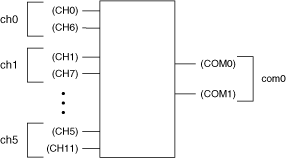

The following figure represents the NI PXI-2584 in the 2-wire 6×1 multiplexer topology.
|  |
|
Both the scanning command, ch1->com0;, and the immediate operation, niSwitch Connect Channels VI or the niSwitch_Connect function with parameters ch1 and com0, result in the following connections:
The following figure and table identify the pins for the NI PXI-2584 in the in the 2-wire 6×1 multiplexer topology.

| Software Name | Pin Name | |
|---|---|---|
| + | – | |
| ch0 | CH0 | CH6 |
| ch1 | CH1 | CH7 |
| ch2 | CH2 | CH8 |
| ch3 | CH3 | CH9 |
| ch4 | CH4 | CH10 |
| ch5 | CH5 | CH11 |